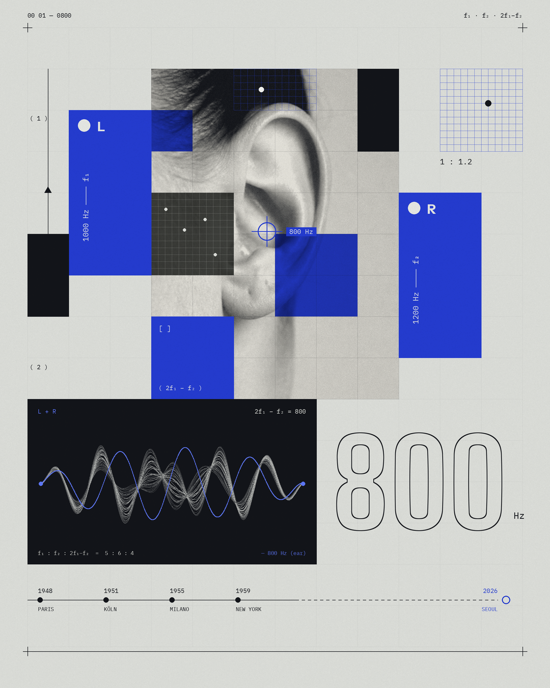

Workshop & Seminar
Listening Session

Program introduction
A listening workshop about what the studio changed.
In the 1950s the first electronic music studios opened in Paris, Cologne, Milan and New York. The people working in them did more than use new machines — they changed what could be heard as music.
This workshop goes through those changes by doing rather than by explanation: making sounds, moving around the room, and making one piece together. It ends by turning the same question on the present — what is today’s studio changing?
No musical background is needed, and nothing has to be prepared in advance.
Workshop flow
Workshop flow
Perform La Monte Young’s Composition 1960 #7 together, then share what each person heard
Introduction to four electronic music studios of the 1950s — Paris, Cologne, Milan, New York
Alvin Lucier’s I Am Sitting in a Room, performed live — building this room’s resonance from a participant’s voice
Break
Four pieces, four kinds of machine — Laurie Spiegel, Yasunao Tone, Jacob Kirkegaard and Holly Herndon
Discussion — what is today’s studio inventing?